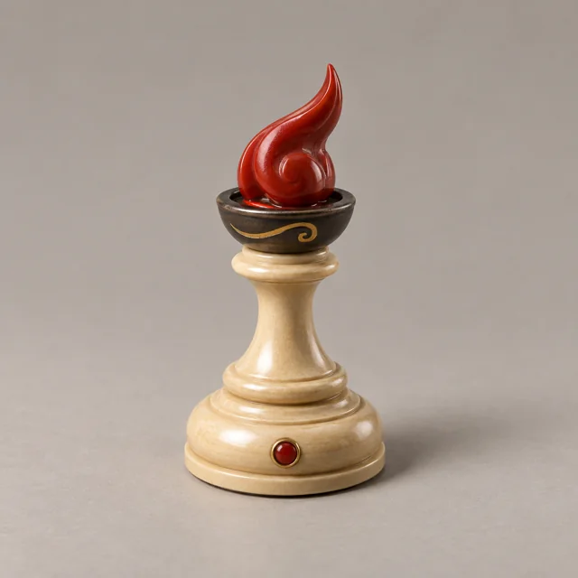

Hi
Ember Cup
- Attack
- 2
- Defense
- 1
- Speed
- 2
- Mining
- 1
A narrow pawn stem carries one hooked flame in a shallow iron cup.
Quick and biting
Design definition
A single compact backward-curving vermilion lacquer flame with a pointed tip, seated in a shallow dark iron brazier. Fine gold scroll line on the cup, thin stem and light shoulder, tiny ember groove.
Attack 2 reads as a sharp flame; defense 1 as a narrow waist. A slight sweep suggests speed 2; one small ember groove suggests modest mining.
Catalogue cost: 3 · Stable ID: fire_1